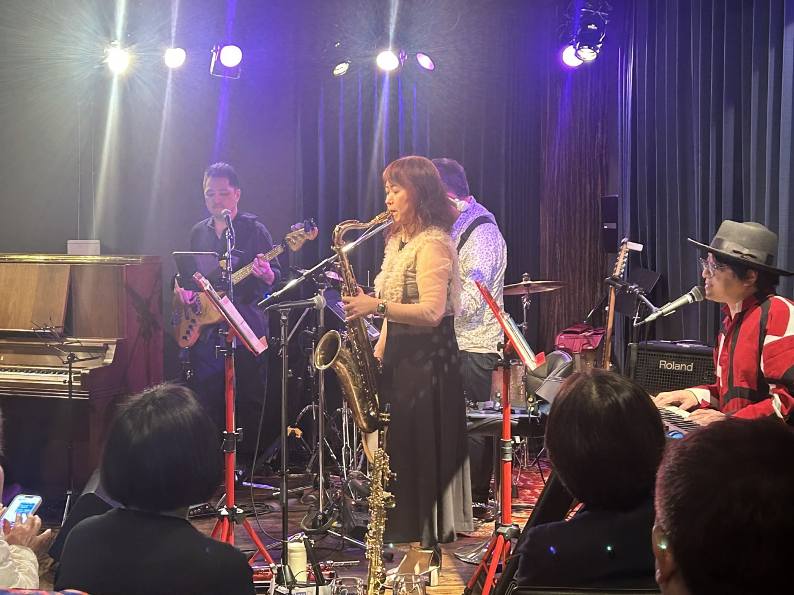

SAXOPHONE
サックス奏者
聴く人も、歌う人も、音楽のまんなかに。
PROFILE
東京を中心に、ライブやセッションで活動するサックス奏者です。サックスはソプラノ・アルト・テナーを演奏し、フルート、EWI、NuRADも演奏します。
オーケストラやバンドでの演奏のほか、歌う方を生バンドで迎えるセッションライブの企画・主催、シンガーのライブ開催のサポートも行っています。ジャズから昭和歌謡、J-POPまで、その場にいる人と一緒に音楽をつくる時間がいちばんの喜びです。
2026年2月には、自身の主催で「Chiho's Birthday Live 2026 - Reborn 55」を開催しました。
LIVE

次のライブは準備中です。
決まり次第、公式LINEでいちばん早くお知らせします。